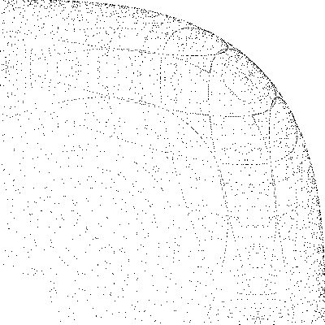
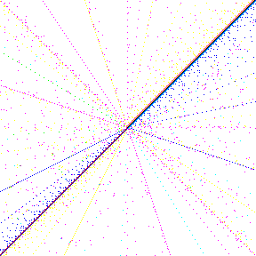
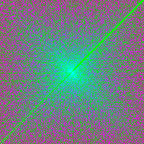

Conjecture: Let R be an euclidean ring all of whose nontrivial residue class rings are finite. Further let P in R[x] be a univariate polynomial over R such that gcd{ P(x) | x in R } = 1. Then there is an x in R such that P(x) has not more prime factors in R than the polynomial P in R[x].
Let n be a Carmichael number with three prime factors, and let p be one of them. Then we have n < 4p6 (proof). Using this upper bound, it can be verified by means of computation that p can be any odd prime number less than 1223, but not 1223 itself. There is a GAP program and a Pascal program for this. A precomputed table is available here. The numbers of Carmichael numbers with 3 prime factors having a specific factor p < 10000 are listed here.
Question: Which primes are possible values of p?
Are there positive integers a,b > 1 such that aπ = b?
The existence of such numbers is implausible, but the transcendence of π is obviously insufficient for a proof. Cf. this question on MathOverflow.
Marking the rational points on the unit sphere (equation x2+y2+z2 = 1) with common denominator less than a given upper bound and projecting one octant onto the plane z = 0 yields the following picture:
Taking the equation x3+y3+z3 = 1 instead yields the following picture:

How does the respective image for the equation x4+y4+z4 = 1 look like?
It is known that this equation has infinitely many solutions as well. The `minimal' solution is (x,y,z) = (95800/422481,217519/422481,414560/422481).
Write down the sequence of positive integers in the following manner onto a square grid:
7 --- 8 --- 9 --- 10
| |
| |
6 1 --- 2 11
| | .
| | .
.
5 --- 4 --- 3
(like in Ulam's prime number spiral). Then paint the squares in colors depending on the length of the period of the continued fraction expansion of the square root of n. This yields images like the following:
|  |  |
(Removed.)
A GAP implementation of elliptic curve point groups (currently only affine Weierstrass form) is available here (elliptic.gd, elliptic.gi). There are also some examples for the use of these objects.
{kind=link}
{kind=link}
{kind=link}
{kind=link}